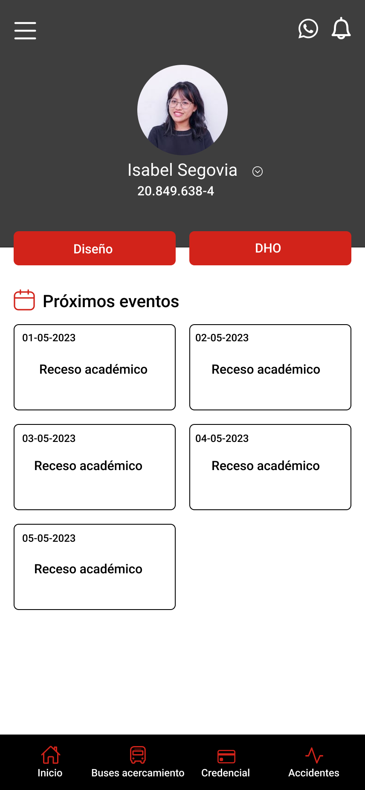
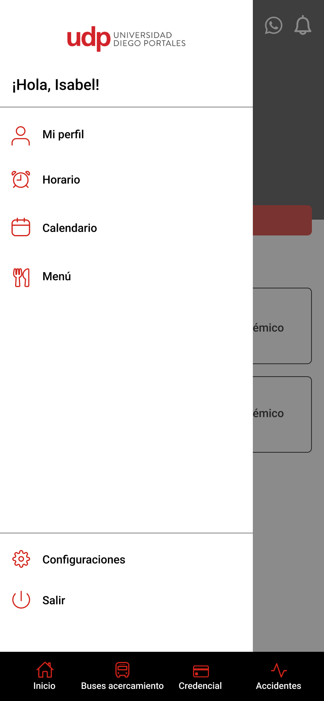

<!DOCTYPE html>
<html lang="es">

</html>

<head>
    <meta charset="UTF-8">
    <meta name="viewport" content="width=device-width, initial-scale=1.0">
    <title>janis</title>
    <link rel="stylesheet" href="./style/style.css">
</head>

<body>
    <header>
        <nav>
            <div class="logo">j a n i s</div>
            <div class="links">
                <a href="https://www.github.com/janisepulveda">GitHub</a>
                <a href="mailto:janis.sepulveda@mail.udp.cl">Email</a>
                <div grid-col="3" grid-pad="2" class>
                    <div class="overlay1">
                    </div>
                </div>
        </nav>
    </header>
    
    <div class="titulo">
        <h3>Propuesta de mejora App ConectaUDP</h3>
    </div>
    <div class="row">
        <div class="column">
            
        </div>
        <div class="column">
            
            <div class="overlay11">
                <div class="overlay12">La propuesta de mejoras para la App ConectaUDP se crea con el objetivo de
                    entregar información académica y administrativa a los estudiantes de la Universidad Diego Portales.
                    La
                    propuesta de mejoras se enfoca en la interfaz de usuario, facilitando la navegación
                    y el acceso a la información. Incluye un rediseño de la interfaz de usuario, con un enfoque en la
                    usabilidad y la accesibilidad. También incorpora nuevas funcionalidades, como la
                    posibilidad de acceder a un horario de clases más sintetizado y ordenado, notas y otros servicios
                    académicos. Se basa en un levantamiento de información y posterior análisis de las necesidades de
                    los estudiantes y en las mejores prácticas
                    de diseño de interfaz de usuario. Prototipado de alta fidelidad en
                    <a
                        href="https://www.figma.com/proto/VfNONnYCN50sC2l5TuP63Y/21-sepulveda-janis-conectaudp?type=design&node-id=1-2&t=1J5n7Y2gwfiJ4ike-0&scaling=scale-down&page-id=0%3A1&starting-point-node-id=1%3A7">Figma.</a>
                </div>
            </div>
        </div>
    </div>
    <footer>
        <p>&copy; 2024 Janis</p>
    </footer>
</body>

</html>